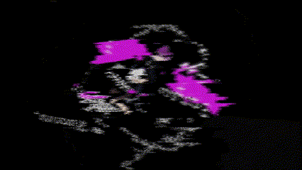

Hayato Shimizu
Portfolio Website
清水隼人 ポートフォリオサイト
「百聞は一見に如かず」
僕が頑張ってきた事を伝えるためにこのwebサイトを作りました。
ESには載せていない事も、たくさん載せています。
よろしければぜひ見ていってください。
WORKS
-

- アニメーション
「YONA YONA RICE」 - 個人制作
自分で描いたイラストにアニメーションをMohoで自作した。アニメーション初挑戦。
- アニメーション
-

- デジクリ紹介PV
- 共同制作
今のデジクリを紹介する動画。主催ディレクター兼プロデューサーを担当。会議と制作を何度も重ねてデジクリの魅力を詰め込んだ。
-

- Live 2D
- 個人制作
目と顔をトラッキングし、2Dアバターを動かすもの。Youtube配信者のような事に使える。アバターはるりちゃん（オリジナルキャラクター）でこのサイトのアイコンにもなっている。
-

- 合同MV企画
「Retune」 - 共同制作
イラスト・音楽・動画編集を役割分担し、1つの楽曲MVを完成させた。ここでは動画編集班として参加。After Effect初挑戦。
- 合同MV企画
-

- ゲーム
「共産COMEBACKTO労働」 - 共同制作
プログラミング・イラスト・BGMと分かれてゲームを3日間で完成させた。イラスト班として、ドット絵に初挑戦
- ゲーム